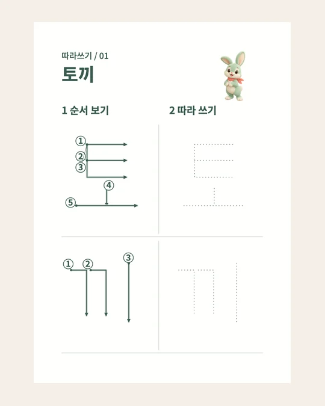
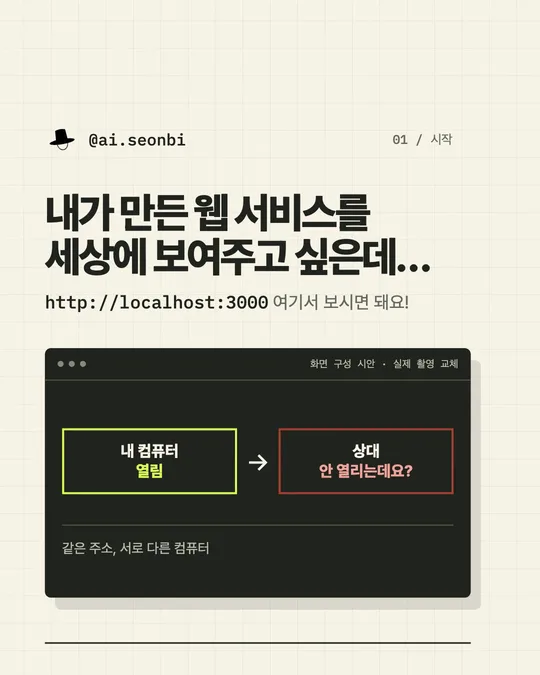

HANGUL · ENGLISH · FREE PDF좋아하는 캐릭터로
좋아하는 캐릭터로
따라쓰기 카드 만들기.
티니핑 카드 30종과 이미지 레퍼런스로 같은 구성을 만드는 프롬프트.
한글 앞면과 영어 뒷면 PDF까지 한 번에 받아보세요.
작업 과정을 담은 스킬과 시작 가이드.
필요한 자료를 골라 나의 작업에 적용해 보세요.

티니핑 카드 30종과 이미지 레퍼런스로 같은 구성을 만드는 프롬프트.
한글 앞면과 영어 뒷면 PDF까지 한 번에 받아보세요.

잠깐 공개, 허용한 기기만 공유, 누구나 접속, 상시 운영.
Cloudflare·Tailscale·Vercel 중 상황에 맞는 방법을 고르고 그대로 따라 해보세요.

레퍼런스 조사부터 시안 비교, 수정과 기록까지.
스킬·설치 방법·실제 요청과 제작 예시를 담았습니다.